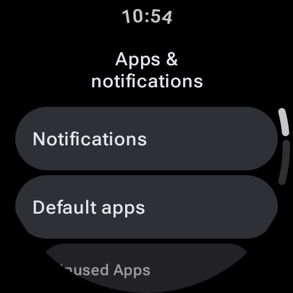
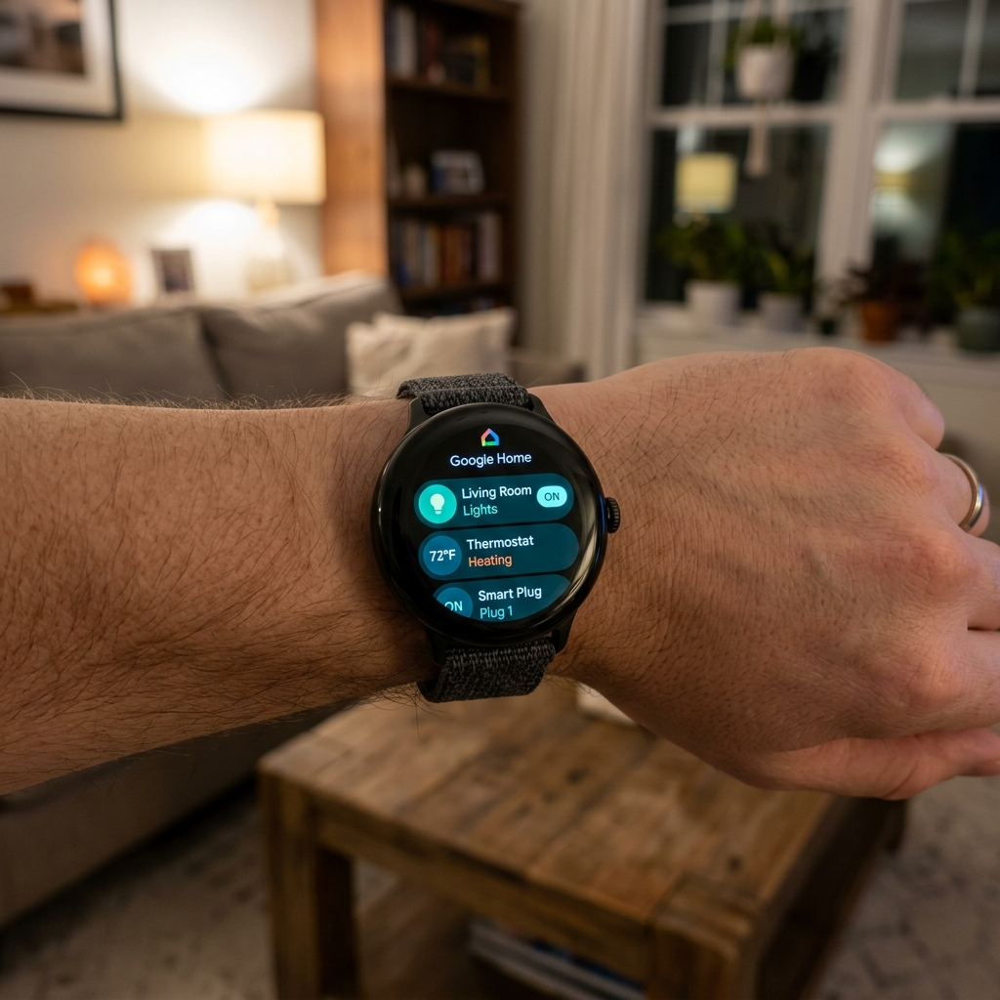

Akıllı ev hayali, hayatı zahmetsizce kolaylaştırmaktır. Ancak sadece bir yatak ucu ışığını kapatmak için bile telefonunuzun kilidini açmak, bildirimleri geçmek ve bir uygulama açmak çoğu zaman fiziksel bir düğmeye basmaktan daha fazla çaba gerektirir. Gerçek kolaylık, evinizin kontrol merkezinin doğrudan bileğinizde takılı olmasıdır. Wear OS için resmi Google Home uygulamasıyla saatinizin ekranına hızlıca dokunarak ışıkları ayarlayabilir, akıllı prizleri izleyebilir, termostat ayarlarını değiştirebilir ve kapı zili uyarılarını alabilirsiniz.
İster koltukta dinleniyor, ister elinizde alışveriş paketleri taşıyor veya karanlık çöktükten sonra eve dönüyor olun, çevrenizi bir Wear OS cihazından (Samsung Galaxy Watch, Google Pixel Watch veya TicWatch gibi) kontrol etmek inanılmaz derecede verimlidir. İşte bileğinizde Google Home uygulamasını nasıl yapılandıracağınıza ve kullanacağınıza dair bir kılavuz.

Başlarken: Gereksinimler ve Kurulum

Akıllı saatinizde Google Home kullanmak için kurulumunuzun şu koşulları karşıladığından emin olun:
- Saatiniz Wear OS 3 veya daha yüksek bir sürümü çalıştırmalıdır. Daha eski Android Wear sürümleri modern Google Home istemcisini desteklemez.
- Akıllı saatiniz, akıllı ev ekosisteminizi kontrol eden Google Hesabı ile oturum açmış olmalıdır.
- Akıllı ev cihazlarınız telefonunuzdaki Google Home uygulamasında zaten kurulmuş ve çalışıyor olmalıdır.
Saat uygulamanız yüklü değilse saatinizde Play Store'u açın, "Google Home" kelimesini arayın ve Yükle seçeneğine dokunun. Açıldıktan sonra telefonunuzun ev veritabanıyla otomatik olarak senkronize olacaktır.
Wear OS Google Home Arayüzünde Gezinme
Saat uygulaması hızlı ve kompakt etkileşimler için tasarlanmıştır. Bileğinizde Google Home'u açtığınızda, önce Sık Kullanılanlar (Favorites) listenizi ve ardından odalarınızı görürsünüz. Arayüz kaydırma hareketleri için optimize edilmiştir:
- Akıllı Işıklar: Bir ampulü açmak veya kapatmak için üzerine dokunun. Parlaklık yüzdelerini ayarlayabileceğiniz veya renk profillerini değiştirebileceğiniz bir kaydırıcıyı ortaya çıkarmak için cihaz kartında sola/sağa kaydırın.
- Termostatlar: Güncel sıcaklığı görmek için termostatınıza dokunun. Hedef sıcaklığı anında yükseltmek veya düşürmek için artı (+) ve eksi (-) simgelerine dokunun.
- Akıllı Prizler ve Fanlar: Bu kartlara dokunmak ikili (açık/kapalı) bir güç anahtarı görevi görerek bunları anında açıp kapatır.
- Kameralar ve Kapı Zilleri: Nest Kapı Zili veya uyumlu bir kameranız varsa, birisi zili çaldığında saat ekranınızda görsel uyarılar alabilirsiniz. Uyarıya dokunmak, ön kapınızdan gelen düşük gecikmeli canlı video akışını doğrudan saat ekranınızda görüntüler.
Hızlı Erişim İçin Google Home Kartlarını Ekleme
Uygulamayı başlatmadan bile evinizi kontrol etmek için Wear OS Kartlar (Tiles) özelliğinden yararlanabilirsiniz. Saat kadranınızdan sola kaydırmak sizi anında bu panellere götürür. Google Home son derece özelleştirilebilir bir kart sunar:
- Döngünüzün sonuna gelene kadar sağdan sola kaydırın, ardından "+" (Kart ekle) seçeneğine dokunun.
- Kategoriler arasında Google Home Sık Kullanılanlar (Google Home Favorites) kartını bulun ve eklemek için dokunun.
- Eklendikten sonra karta basılı tutun ve Düzenle seçeneğine dokunun.
- En sık etkileşime girdiğiniz 3 ila 5 akıllı cihazı seçin (örneğin Oturma Odası Işığı, Yatak Odası Vantilatörü, Ön Kapı Kilidi).
- Kaydetmek için fiziksel yan düğmeye basın. Artık en yaygın akıllı ev kontrolleriniz sadece bir kaydırma uzaklığındadır.
Uzman İpucu: Ses Entegrasyonu
Google Asistan'ın gücünü unutmayın. Bileğinizi kaldırıp simplemente *“Hey Google, tüm ışıkları kapat”* veya *“Termostatı 21 dereceye ayarla”* demeniz yeterlidir. Wear OS'teki Asistan, komutları yerel olarak işler ve Google Home bulutu aracılığıyla neredeyse anında yürütür.
Akıllı Ev Kontrol Protokollerinin Karşılaştırılması
Akıllı bir evi giyilebilir bir cihazdan yönetmek hız, erişilebilirlik ve güvenilirlik gerektirir. Cihazlarınızı Wear OS'ten kontrol etmenin farklı yöntemlerini karşılaştıralım:
| Yöntem | Yürütme Hızı | Eller Serbest Yeteneği | En İyi Kullanım |
|---|---|---|---|
| Google Home Uygulaması | Orta (Uygulamanın açılmasını gerektirir) | Hayır | Detaylı oda ayarlamaları ve kameraları kontrol etme |
| Sık Kullanılanlar Kartı | Hızlı (1 kaydırma ve dokunma) | Hayır | Günlük 3-5 favori ışığınızı veya prizinizi açıp kapatma |
| Google Asistan | En Hızlı (Ses tetikleyici) | Evet | Toplu eylemler ("Evi kapat") veya eller doluyken yapılan görevler |
Bilekten Akıllı Ev Kurulumunuzu Optimize Etme
Güvenilir ve hızlı bir akıllı ev deneyimi sağlamak için bu yapılandırmaları aklınızda bulundurun:
- Sık Kullanılanlarınızı İğneleyin: Telefonunuzdaki Google Home uygulamasında Sık Kullanılanlar sekmesini düzenleyin. Saat uygulaması, telefonun sık kullanılanlar sırasını yansıtır; bu nedenle en çok kullandığınız cihazları en üste yerleştirmek saatinizde bitmek bilmeyen kaydırmaları önler.
- Saatinizi Bağlı Tutun: Saat Wi-Fi veya LTE'ye sahip olmadığı sürece arka plan eylemleri telefon üzerinden yönlendirilir. Komutlar yavaş geliyorsa saatinizin telefonunuza olan Bluetooth bağlantısının kararlı olup olmadığını kontrol edin.
- Cihazları Net Şekilde Adlandırın: Akıllı ev cihazlarınıza kısa, fonetik olarak anlaşılır adlar verin (örneğin "Philips Hue Ampul 39A" yerine "Koridor Işığı"). Bu, Google Asistan'ın ses tanıma başarı oranını önemli ölçüde artırır.
Son Sözler
Akıllı evinizi Wear OS ve Google Home ile kontrol etmek, dijital otomasyon ile fiziksel konfor arasındaki köprüyü kurar. Hızlı erişim kartları, sesli kontroller ve canlı kamera bildirimleri ile ortamınızı gerçekten bileğinizden yönetebilirsiniz. Google Home uygulamasını bugün saatinize indirin ve modern bağlantılı bir evin kolaylığını deneyimleyin!